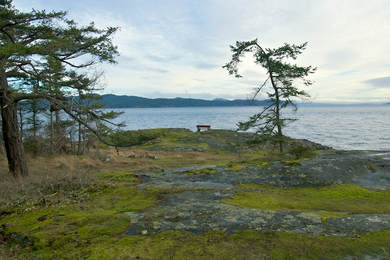
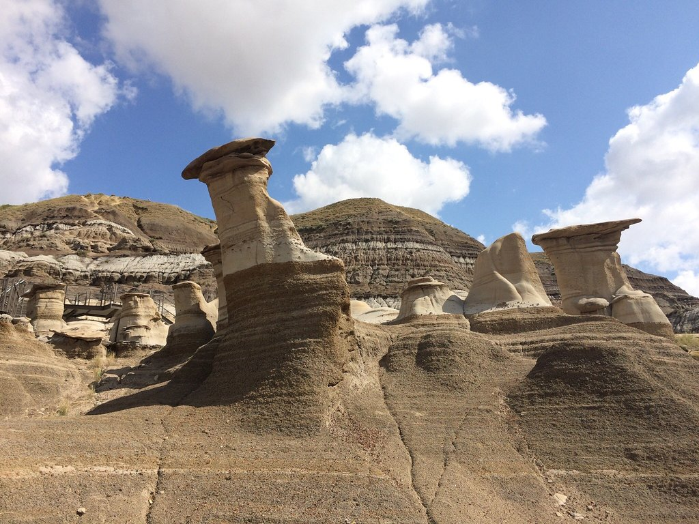

Salt Spring Island is a small island off the coast of British Columbia, right beside the much larger Vancouver Island. The island has several provincial parks on it, all with pleasant walks through nature, and some with places to camp in. Many of the locals are artists who make and sell their art in town or right out of their studios. The whole island is so quiet and peaceful, visiting is always the highlight of my vacation.

Called the City of Dinosaurs, Drumheller holds many amazing sights and experiences to enjoy. The highlights of my visit were:
Along with the rest of my family, my favorite food is sushi. Every time there is a special day like a birthday or significant holiday, we always go for sushi dinner to celebrate! Our favorite place to go is a restaurant called Nomiya, but they changed their menu a while ago, so we have been trying other restaurants recently.